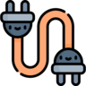

Intergrate with VSCpcapviewer ensures cross-platform compatibility and seamless integration into the popular developer workflow.
LightweightIts lightweight design ensures minimal resource usage while maintaining efficient functionality.
Visualized AnalysisThe tool delivers intuitive and visually-rich analysis results, simplifying the process of understanding complex packet data.
Cli Supportprovide a terminal-friendly interface to perform packet analysis directly from the command line.